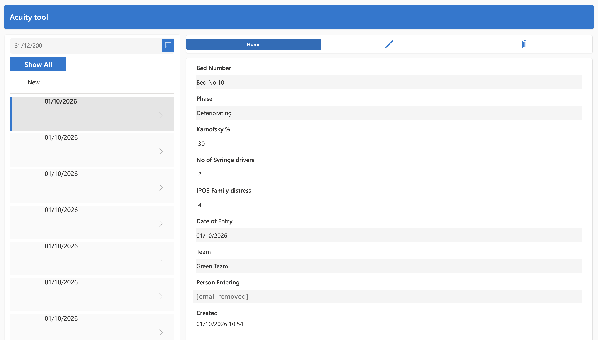
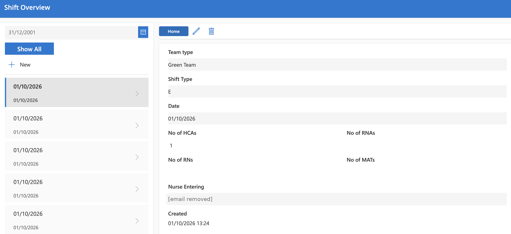

← Back to portfolio
Clinical Acuity & Workforce Planning App
Real-time acuity and staffing planning for hospice care at LOROS Hospice

The problem
Nurses recorded patient acuity and staffing on paper forms, and staffing calculations had to be worked out by hand.
What I built
A Power Apps app with three screens:
- Patient AC Entry: nurses record acuity scores for each bed, including the patient's phase, Karnofsky score, number of syringe drivers and IPOS family distress.
- Staff Entry: nurses log each shift, the team, and the number of RNs, RNAs, HCAs and MATs on duty.
- Summary: combines both to show each team's RN/RNA and HCA hours available today, the hours its patients need, and the hours remaining.
Data is captured in real time, staffing and resource calculations are automated, and the app includes governance controls.
How I built it
I built it iteratively, alongside the clinical teams who use it.
Impact
- Replaced paper forms on the ward
- Used by around 80 clinical staff
- Staffing and resource calculations happen automatically instead of by hand
Next, I'm building a clinical operations dashboard linked to the app, moving towards near-real-time updates through APIs.
Screenshots
Email addresses have been removed. Click a screenshot to see it full size.
Patient AC Entry

Staff Entry

Summary

Built with
- Power Apps
- Power Automate
- SharePoint
- Power BI